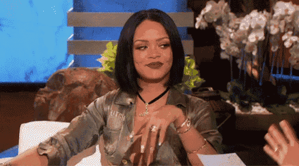

Robyn Rihanna Fenty (Parroquia de Saint Michael, Barbados, 20 de febrero de 1988), conocida simplemente como Rihanna, es una empresaria, cantante, compositora, actriz y diseñadora barbadense.
Fue criada en Bridgetown, Barbados, y comenzó su carrera cuando hizo una audición para el productor de discos estadounidense Evan Rogers en 2003, quien la invitó a los Estados Unidos para grabar cintas de demostración.
En 2005, después de firmar con Def Jam, pronto obtuvo reconocimiento con el lanzamiento de sus dos primeros álbumes de estudio, Music of the Sun (2005) y A Girl Like Me (2006), ambos influenciados por la música caribeña y alcanzaron su punto máximo dentro de los diez primeros puestos de la lista Billboard 200 de Estados Unidos.
El tercer álbum de Rihanna, Good Girl Gone Bad (2007), incorporó elementos de dance pop y estableció su estatus como símbolo sexual en la industria de la música.
El sencillo «Umbrella», que encabezó las listas de éxitos, le valió a Rihanna su primer premio Grammy y la catapultó al estrellato mundial.
Continuó mezclando géneros pop, dance y R&B en sus siguientes álbumes de estudio, Rated R (2009), Loud (2010), Talk That Talk (2011) y Unapologetic (2012), el último de los cuales se convirtió en su primer número uno en Billboard 200.
Los álbumes generaron una serie de sencillos que encabezaron las listas de éxitos, incluidos «Rude Boy», «Only Girl (In the World)», «What's My Name?», «S&M», «We Found Love», «Where Have You Been» y «Diamonds».
Su octavo álbum, Anti (2016), mostró un nuevo control creativo tras su salida de Def Jam. Se convirtió en su segundo álbum número uno en los Estados Unidos y contó con el sencillo «Work» que encabezó las listas de éxitos.
Durante su carrera musical, Rihanna ha colaborado con muchos artistas, como Drake, Britney Spears, Adam Levine, Chris Brown, Coldplay, Ne-Yo, Jay-Z, Kanye West, Eminem, Paul McCartney y Shakira.
